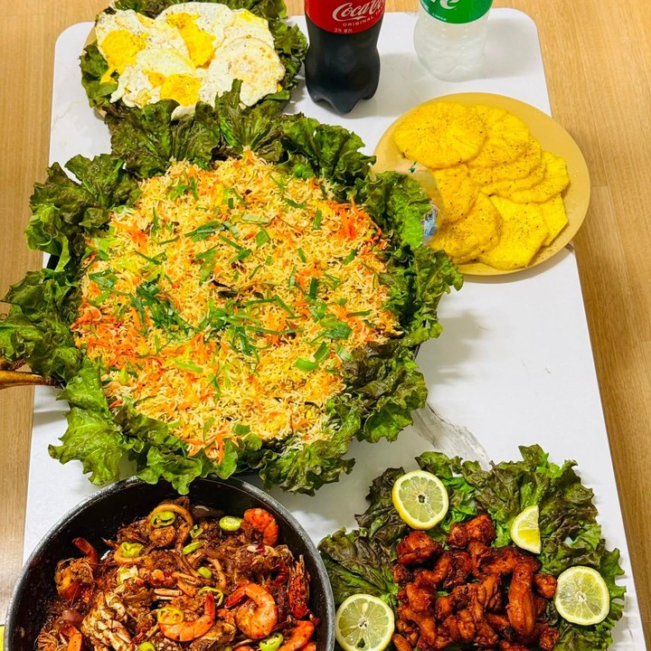
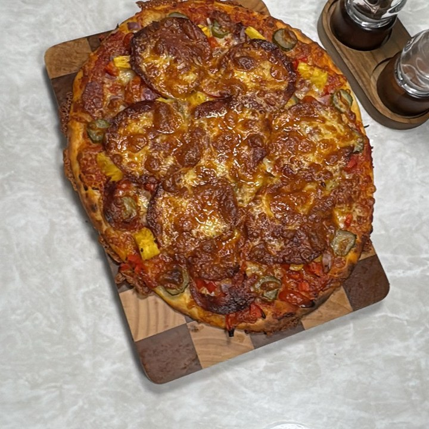
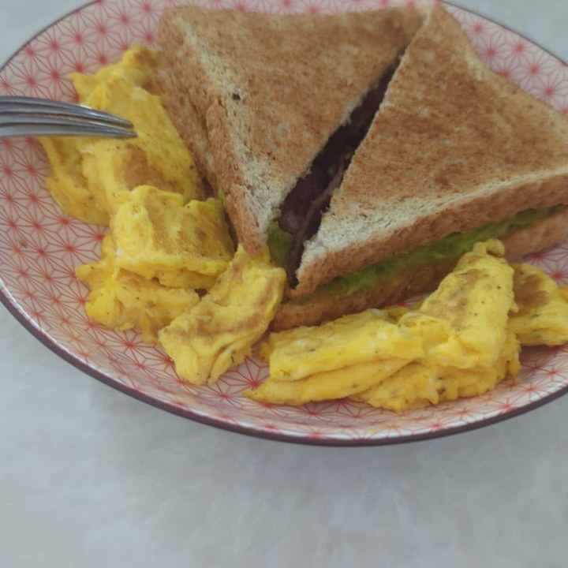
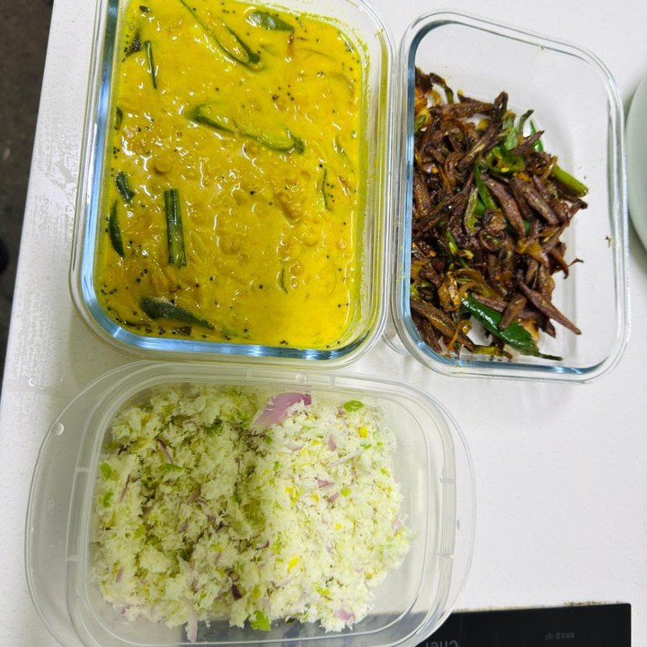

Sri Lankan · 31 · Young children, cooking & household
Referred by the family she is with now, who hired her for their daughter and are letting her go only because his wife is moving to part-time work and will be at home. He wrote to us about her unprompted.
“We did not want someone to just watch over our daughter but play with and interact with her when we are busy, and this is most important — she treated our daughter as her own.”
— Matt, her employer now
Trust signals
Our strongest trust signal — the family she works for now, referring her directly and willing to speak to a family who is proceeding seriously.
At a glance
The essentials
Available from
By 7 December 2026. Her employer will release her as soon as a family is ready. Transfer within Singapore.
Why she is available
Her employer’s wife is taking a part-time role in order to be at home more, so the household no longer needs a helper. Nothing to do with her work — he wrote to us to help her find somewhere good.
Where she is now
Since September 2025 — a household of three in a private flat. Their daughter, now three, is the reason they hired her, and the cooking, tidying, cleaning and washing come with her.
Children
Toddlers upward. She is clear that she would not take a newborn, and we would rather a family knew that at the outset.
Elderly care
August 2023 to June 2025 — nearly two years in a household of six, registered for cooking, the general household and the care of an elderly person.
Cooking
Sri Lankan and Indian, and Western and Italian alongside — dhal and pol sambol as readily as a pizza or a burger. Photographs below.
Pets
Not pets. She is straightforward about it, and we would rather a family knew at the outset.
What she is looking for
In her own words: “a job where I can learn new things, improve my skills, and grow in my career… a friendly and supportive working environment.”
Matt wrote to us about her himself, while she is still working for him.
On why he is letting her go: “My wife is taking a part time role in order to be at home more, which removes the need for us to have a helper.” And on why he is referring her: “because we are fond of her and hope to support her.”
“She did lots of household work — cooking, tidying, cleaning, washing etc. — but caring for my daughter was the primary reason we had hired her. She cooked, fed, washed, clothed. Both my wife and I work busy and long hours, so she had responsibility to play with and entertain her between school and when we arrive home.”
“I would say that she has a gentle and kind character. My daughter at 3 years old can be rowdy sometimes — she is always patient and creative with play. We did not want someone to just watch over our daughter but play with and interact with her when we are busy, and this is most important — she treated our daughter as her own.”
He is direct about where she would suit: “a family with a young child… She would be able to care for senior too.” On that last point her employment record agrees — nearly two years of it is registered for the care of an elderly person.
In Singapore since July 2019.
September 2025 to now. A household of three in a private flat — their daughter, now three, and the cooking and the house. Registered for cooking, general household and the care of a toddler.
August 2023 to June 2025 — nearly two years. A household of six in a private flat, registered for cooking, the general household and the care of an elderly person. Her longest placement, and the ground for anything an eldercare household would want to ask.
Before that. She has worked in Singapore since July 2019, and a number of those placements were short. We have been through the whole record ourselves; it is available to any family who asks, and she will talk any part of it through with you directly. We would encourage that conversation.
Where she’d suit next. A family with a young child, which is what her employer saw her do every day, or a household with an older relative at home. She cooks Sri Lankan and Indian food and Western and Italian besides. She would not take a newborn, and not pets.
Her employment record, her full work history and a conversation with her current employer are available to interested families, with her consent.
Photographs Krish took of her own cooking — Sri Lankan home food alongside the Western dishes she cooks for the family she is with now.




Tell us a little about your household and we’ll be in touch within 1–2 business days. We’ll only move forward if it feels like a genuine fit.